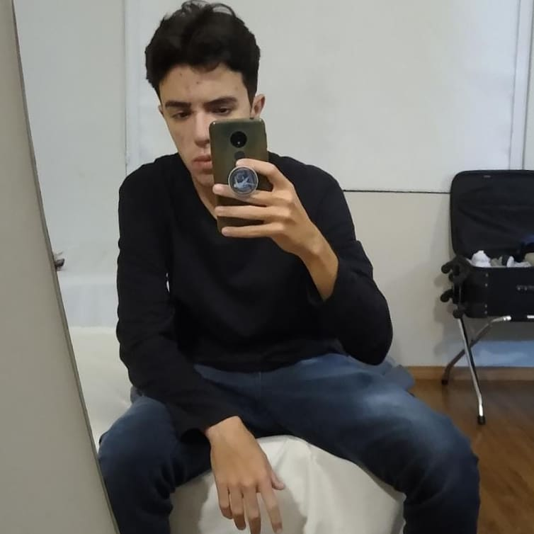

Gabriel Santos da Silva, 22 Anos, cursando Bacharelado interdisciplinar em ciência e tecnologia, pela UDESC. GEEK, Desde criança teve interesse em tecnologia
sempre antenado em novas descobertas e criações mirabolantes.

Gustavo Santos, 19 anos, Cursando BICT.
Sempre pesquisando sobre tecnologia e estudos científicos, fã de Esports e jogos.